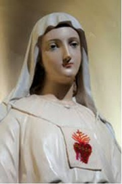
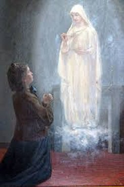
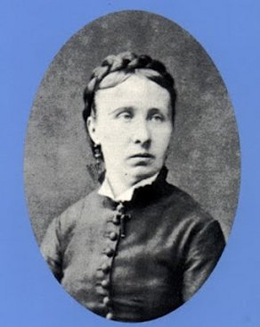

"NOSSA SENHORA
DE PELLEVOISIN"




"QUINZE ADMIRÁVEIS E INESQUECÍVEIS APARIÇÕES DE NOSSA SENHORA, TRAZENDO MUITO AMOR, ENSINAMENTOS, CURA E SE TORNANDO APÓSTOLA DO ESCAPULÁRIO DO SAGRADO CORAÇÃO DE JESUS"
 -
AS APARIÇÕES DE NOSSA SENHORA
-
AS APARIÇÕES DE NOSSA SENHORA
-
MORTE + A IGREJA RECONHECE + CATEQUESE
-
FOTOGRAFIAS + CONVITE + E-MAIL